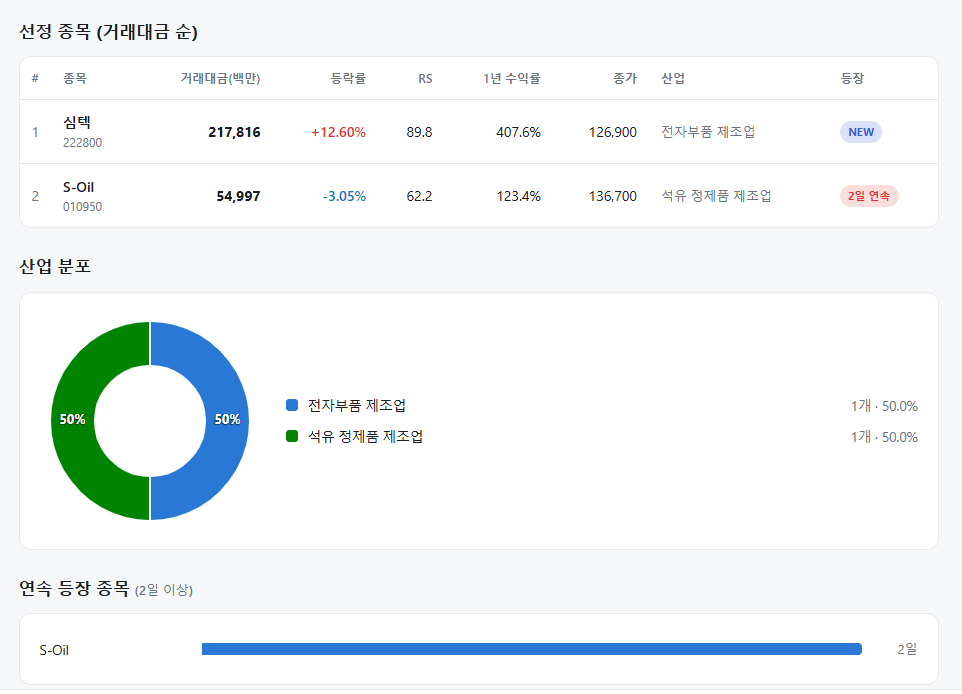
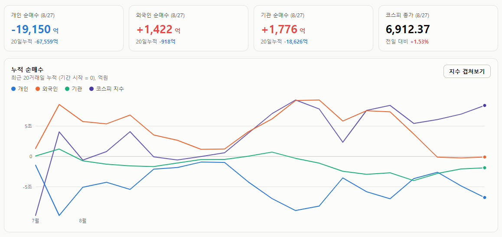

매일의 주도주 정리를 위해 기록합니다.
연속적으로 나온 종목들 또는 상승 후 조정받는 종목 위주로 리서치 해보시면 좋을 것 같습니다.

*오늘 퀀트픽은 없습니다.
연속종목으로 S-OIL(2회) 출현했습니다.
#주도섹터
전력 인프라(전선·전기장비) 및 우주항공
주요 종목: 가온전선(+25.00%), 한중엔시에스(+16.36%), LS에코에너지(+9.38%), LS ELECTRIC(+8.68%), 한화시스템(+6.13%), 한화에어로스페이스(+5.80%).
분석: 전기장비 업종이 +10.30%, 전선 테마가 +8.72%, 우주항공과국방 업종이 +4.72% 상승했습니다. AI 데이터센터 전력망 확충 수혜로 가온전선과 LS ELECTRIC 등 전력 인프라 밸류체인에 기관 매수세가 쏠렸으며, 우주항공·방산주로도 온기가 확산되었습니다.
반도체 메가캡 및 장비
주요 종목: 심텍(+12.60%), 에스투더블유(+11.08%), SK하이닉스(+2.43%), 삼성전자(+1.53%).
분석: SK하이닉스와 삼성전자가 각각 +2.43%, +1.53% 상승하며 지수를 견인했습니다. 전자부품 제조업 팩터에서 심텍(+12.60%, 거래대금 2,178억 원, RS 89.8)이 2천억 원대 유동성을 흡수하며 시스템에 신규 진입, 강한 상방 모멘텀을 증명했습니다.
2차전지 셀·소재
주요 종목: 엔켐(+19.56%), 케이엔에스(+18.20%), 삼성SDI(+10.27%), LG에너지솔루션(+5.56%).
분석: 전기제품 업종이 +6.44%, 2차전지(생산) 테마가 +5.52% 상승했습니다. 단기 낙폭이 컸던 삼성SDI(+10.27%)와 엔켐(+19.56%) 등을 중심으로 저가 매수세가 강하게 유입되며 배터리 섹터 전반이 랠리에 동참했습니다.
#조정섹터
화장품, 일부 2차전지 분리막 및 정유
주요 종목: SK아이이테크놀로지(-9.17%), 실리콘투(-5.12%), S-Oil(-3.05%).
분석: 전일 상한가를 기록했던 SK아이이테크놀로지(-9.17%)가 급락 반전했고, 실리콘투(-5.12%) 등 K-뷰티 주도주에서 차익 실현이 나타났습니다. 정량 스크리닝에 2일 연속 포착된 S-Oil(-3.05%, RS 62.2)은 지수 반등 국면에서 수급 소외로 소폭 조정을 받았습니다.
#수급동향

코스피 지수는 +1.53% 상승한 6,912.37로 마감하며 6,900선을 탈환했습니다. 대형주 중심의 코스피 200 지수 역시 +1.63% 상승한 1,088.61을 기록했습니다. 코스닥 지수는 +1.30% 상승한 837.65로 장을 마쳤습니다.
유가증권시장에서 외국인 투자자가 1,422억 원(20일 누적 -918억 원), 기관 투자자가 1,776억 원(20일 누적 -1조 8,626억 원)을 동반 순매수하며 수급 하단을 지지했습니다. 반면 개인 투자자는 1조 9,150억 원(20일 누적 -6조 7,559억 원)을 순매도하며 대규모 차익 실현에 나섰습니다.
금리 인상에 대한 시장의 우려가 고비를 넘겼다는 평가와 함께 외국인의 패시브 매도세가 둔화되었습니다. 엔비디아 및 하이퍼스케일러들의 AI 인프라 투자 지속 기대감이 부각되며 반도체와 전력기기 섹터로 유동성이 강하게 집중되었습니다.
엔비디아가 던진 숫자 '70%' — 셀온의 법칙이 깨진 밤
어제 글에서 "엔비디아는 최근 4개 분기 연속 실적 서프라이즈에도 주가가 하락했다"고 짚었습니다. 이번에도 그 흐름이 반복되는 듯했습니다. 실적 발표 직후 시간외 주가는 한때 4% 하락했으니까요. 그런데 컨퍼런스콜이 시작되고 흐름이 뒤집혔습니다. 지금 시간외 주가는 4%대 상승 중입니다. 무엇이 시장의 마음을 바꿨을까요.
① 실적은 예상대로, 아니 예상 이상이었다
먼저 숫자부터 봅니다. FY27 2분기 매출은 962억 달러로 컨센서스(923억)를 웃돌았고, 전년 대비 106% 증가했습니다. 데이터센터 매출은 890억 달러(+117%), 그중 하이퍼스케일러 매출이 487억 달러로 컨센서스를 50억 달러 이상 상회했습니다. 영업이익은 640억 달러. 규모와 증가율 모두 압도적이었습니다.
하지만 어제 글에서 말씀드렸듯, 좋은 실적은 이제 기본값입니다. 시장은 이미 알고 있었고, 그래서 처음엔 하락으로 반응했습니다.
② 판을 뒤집은 한 문장 — "내년 70% 성장"
반전은 가이던스에서 나왔습니다. 엔비디아는 FY28(사실상 2027년) 매출이 전년 대비 약 70% 증가할 것이라고 밝혔습니다.
이 숫자의 무게를 이해하려면 비교가 필요합니다. 블룸버그 컨센서스는 46%였습니다. 시장이 예상한 것보다 24%포인트나 높은, 금액으로 환산하면 이전 전망 대비 2,000억 달러가 더해지는 수치입니다. 단순한 어닝 서프라이즈가 아니라 가이던스 서프라이즈였던 셈이죠.
더 중요한 건 이 70%의 성격입니다. 엔비디아는 이것이 "공급 제약을 반영한 수치"라고 못 박았습니다. 실제 고객 수요는 내년에 두 배로 늘어날 것으로 보이지만, 만들 수 있는 한계 때문에 70%로 잡았다는 겁니다. 수요가 부족해서가 아니라 물건이 모자라서 낮춘 숫자라는 뜻입니다. 회사는 공급 병목이 최소한 FY28 말까지 이어질 것으로 전망했습니다.
여기에 아마존(AWS)이 이번 분기부터 2029 회계연도 2분기까지 GPU 200만 개를 추가 배치하겠다는 파트너십 확대 소식이 더해지며, 수요의 실체가 확인됐습니다.
③ '마진'은 어떻게 됐나
이번 발표의 최대 관전 포인트로 총이익률을 꼽았습니다. 메모리 가격 상승이 엔비디아의 마진을 압박할 것이라는 우려였죠.
결과는 우려가 현실로 드러났습니다. 2분기 마진은 75%를 유지했지만, 회사는 전망을 하향 조정했습니다. 3분기 74%, 4분기에는 71~72%로 저점을 찍고, FY28에 72~73%로 안정될 것이라는 겁니다. 메모리 가격 상승 폭이 회사의 이전 예상마저 뛰어넘었다고 인정했습니다.
그런데 시장이 이를 받아들인 방식이 흥미롭습니다. 엔비디아는 이렇게 설명했습니다 "지금의 메모리 부족은 AI 인프라 구축 자체가 만든 것이며, 상쇄 효과 없이 비용만 올리는 다른 부품과는 다르다"고요. 즉 마진을 깎는 그 힘이 곧 매출을 밀어 올리는 힘과 같다는 논리입니다. 마진 하락을 솔직히 인정하되, 그것이 성장의 증거임을 함께 제시한 셈이죠.
④ 한국 투자자에게 무엇을 의미하나
엔비디아의 마진을 압박한 그 메모리 가격 상승은, 반대편에서 보면 삼성전자·SK하이닉스의 이익입니다. 게다가 엔비디아가 내년 70% 성장을 자신한다는 건 HBM을 그만큼 더 사겠다는 뜻입니다.
여기서 그동안 국내 반도체주를 짓눌러온 우려 하나가 풀릴 실마리가 보입니다. 시장은 "2028년부터 증설 효과로 메모리 공급이 늘어 이익 증가가 둔화될 것"이라 걱정해왔습니다. 2027년까지는 좋아도 그 이후가 불투명하다는 거였죠. 그런데 엔비디아가 실제로 내년 70% 성장을 달성한다면, 2027~28년 실적 전망은 상당 폭 상향 조정될 수밖에 없습니다. '2028년 정체'라는 전제 자체가 흔들리는 겁니다.
"AI 투자가 곧 꺾인다"는 서사는 이번 가이던스로 상당 부분 힘을 잃었습니다.
AI 투자 사이클은 계속 뜨겁습니다.
오늘 하루도 수고하셨습니다.